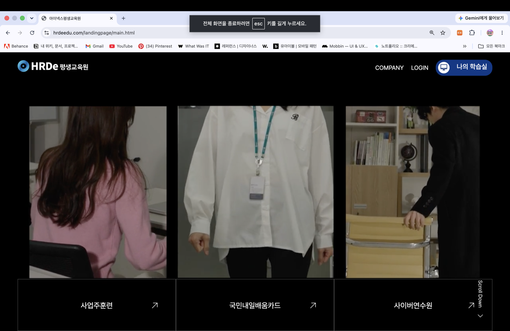

아이넥스 코퍼레이트는 산업 교육(법정교육, 공통역량, 리더십 등)을 주력으로 하는 회사다. 사업이 교육원 중심으로 커지면서, 원래 회사 소개를 위해 만들어졌던 코퍼레이트 사이트에도 교육원 콘텐츠가 점점 더 많이 쌓였다.
회사를 알아야 하는 사람과, 교육 과정을 찾아야 하는 사람은 애초에 다른 사람이었다.

기존 사이트는 사실상 교육원 사이트에 회사 소개 페이지 하나가 얹힌 형태에 가까웠다. 정작 회사에 대한 정보를 찾아야 하는 외부 업체・파트너 입장에서는 탐색이 불편했다.
외부 업체가 사이트에 들어와도 교육 과정 목록부터 마주하게 돼, 회사 소개까지 도달하는 경로가 멀었다.
교육원 콘텐츠와 회사 소개 콘텐츠가 같은 사이트, 같은 내비게이션 위계 안에 섞여 있어 각각의 메시지가 흐려지고 있었다.
콘텐츠를 정리하는 대신, 두 사이트로 구조 자체를 분리하는 방향을 택했다. 코퍼레이트 사이트는 회사를 보여주는 데만 집중하고, 교육원 콘텐츠는 별도 사이트로 넘겼다.
기존 사이트 콘텐츠 감사부터 새 사이트맵 설계, 비주얼 디자인까지 혼자 담당했습니다. 개발팀과는 화면 단위로 리뷰하며 진행했다.
처음엔 한 사이트 안에서 메뉴 구조만 정리하는 방향도 고려했다. 하지만 이 사이트를 찾는 사람이 "회사를 알고 싶은 사람"과 "교육을 듣고 싶은 사람"으로 애초에 나뉜다는 걸 인정하고 나니, 답은 정리가 아니라 분리였다.
같은 정보 구조 안에서 아무리 잘 나눠도 두 목적이 경쟁하게 된다는 걸 배운 프로젝트였다.
영상 중심의 메인 화면과, 필요한 사람만 한 클릭으로 넘어갈 수 있는 교육원 사이트 링크로 정리했다.